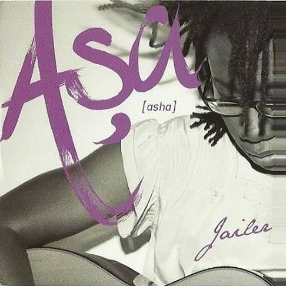
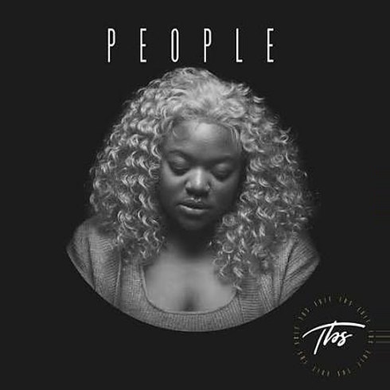

Sunday Reset
Flavor Playlist Vol. 01. Six songs from across the continent, in the order you need them: from the slow start to golden hour.
A good Sunday has a shape. It starts slow, opens up, checks in on itself, softens through the afternoon, gets a second wind and ends in golden light. This playlist follows that shape, one song at a time, with a little of the story behind each one.
- 01
By Your Side
SadeThe lead single from Lovers Rock, the album that won Sade the Grammy for Best Pop Vocal Album. It's a simple promise, to stay by someone's side through the hard times, over a groove that never hurries. Sade Adu was born in Ibadan, Nigeria, and there's no gentler way into a Sunday.
- 02

Jailer
AṣaThe opening track of Aṣa's self-titled debut, produced, like the whole album, by Cobhams Asuquo. It sounds soft, almost like a lullaby, but it's a protest song about freedom and self-determination. Let go of whatever is holding you.
- 03

People
LibiancaThe Cameroonian singer drew on her own experience of depression for this one, and listeners everywhere heard themselves in it. It went all the way to No. 2 in the UK and spawned remixes with Ayra Starr, Omah Lay and Cian Ducrot. Take it as your cue to check in on yourself, and on your people.
- 04
I Choose You
Bridget Blue & BienReleased in October 2024, this duet pairs Kenyan singer Bridget Blue with Sauti Sol's Bien. No drama, no games, just two warm voices making one easy decision. Bridget Blue was one of the artists whose streams more than doubled among young Kenyan listeners in mid-2026.
- 05
Lucy
BensoulBensoul's debut single for Sol Generation, the label Sauti Sol set up, and the song that introduced him to the country in February 2019. He has said it was inspired by true events: a young man who isn't sure where he stands with someone, but keeps loving them anyway. Turn it up a little.
- 06
Wish You Were Here
Black Coffee feat. MsakiOne of South Africa's biggest DJs and producers, with one of its finest voices. A soft, uplifting house song about love across distance, whose video followed couples who have to live apart. Play it as the sun goes down and think of whoever you wish was there.
Save this for next Sunday. Which one is on repeat?
Sources
- Wikipedia: By Your Side (Sade song)
- Britannica: Sade
- Wikipedia: Aṣa (album)
- Guardian Nigeria: Revisiting Aṣa's declaration of freedom
- Wikipedia: People (Libianca song)
- Apple Music: I Choose You, Bridget Blue & Bien
- Tech-ish: Spotify Kenya artist growth, June 2026
- Capital FM: Bensoul releases first single under Sauti Sol's label (Feb 2019)
- The Star: Sauti Sol unveil new signee (Feb 2019)
- OkayAfrica: Black Coffee's Wish You Were Here video
- Briefly: Black Coffee drops Wish You Were Here